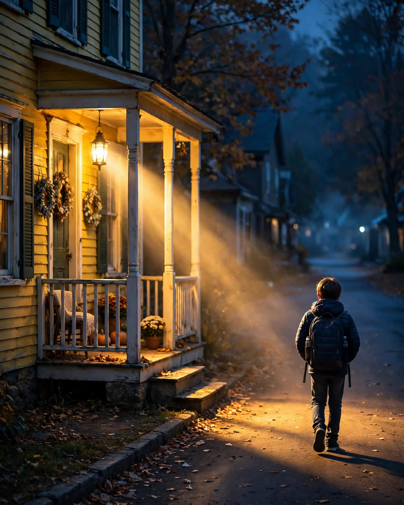

The Porch Light
A Clipp Kaili original story

For eleven years, the porch light across the street was the only one on our block that never went out.
Mrs. Whitaker lived alone in the yellow house with the peeling shutters. Her husband had died the winter I turned eight, and after that, the neighbors said she kept to herself. She waved from her window. She brought in her mail early. But every evening at six, no matter the season, she clicked on that porch light and left it burning until morning.
I was the kid who needed it.
My parents worked the closing shift at the diner out on Route 9. By the time I got off the late bus, our house was dark, the street was dark, and I was nine years old trying to act like I was not scared of my own driveway. Mrs. Whitaker never asked about it. She never made a speech. She just left the light on.
That light was my landmark. I could see it from the corner. I walked toward it the way sailors used to walk toward a lighthouse, and when I reached her driveway, I knew I was almost home. Some nights she would be in the window with a cup of tea, and she would lift two fingers in a little wave, like we had an agreement neither of us had ever said out loud.
When I was fourteen, I finally asked her why she never turned it off.
"Electric bills are high," I said, trying to sound grown. "You could save money."
She looked at me over her glasses and said, "A light is cheap, Daniel. A scared child is expensive in ways money cannot fix."
I never forgot that.
Life moved the way it does. I graduated, left for trade school, got a job two towns over installing electrical work for new houses. I sent Christmas cards. I meant to visit more than I did. Then last October, I drove back to help my parents clean out our old house before they moved south, and I noticed something on the first night.
Mrs. Whitaker's porch was dark.
Not off. Dead. The fixture hung crooked, the bulb long gone, the glass cracked from years of weather. She was eighty-seven now, moving slow, and she told me she could not climb up there anymore and did not want to bother anyone about "a silly light."
"It is not silly," I said.
The next morning, I came across the street with my toolbox before she was even awake. I replaced the whole fixture with a new one I had bought on my own dime — warm, bright, with a sensor that would turn it on at dusk all by itself. I wired it clean. I tested it twice. When I knocked, she came to the door in her robe and looked up at it like it was a sunrise.
"You remembered," she said.
"Every night," I told her. "You have no idea what that light carried me through."
She reached out and held my hand with both of hers, the way old people do when they mean it.
That evening, at six, her new light came on by itself, steady and gold. And for the first time in eleven years, it was not burning for a scared kid across the street.
It was burning because someone finally got to say thank you with his hands.
Nobody should have to walk home to darkness. Some people just make sure you never do.
This story is a work of fiction, written to touch hearts and bring families closer.
← Back to all stories